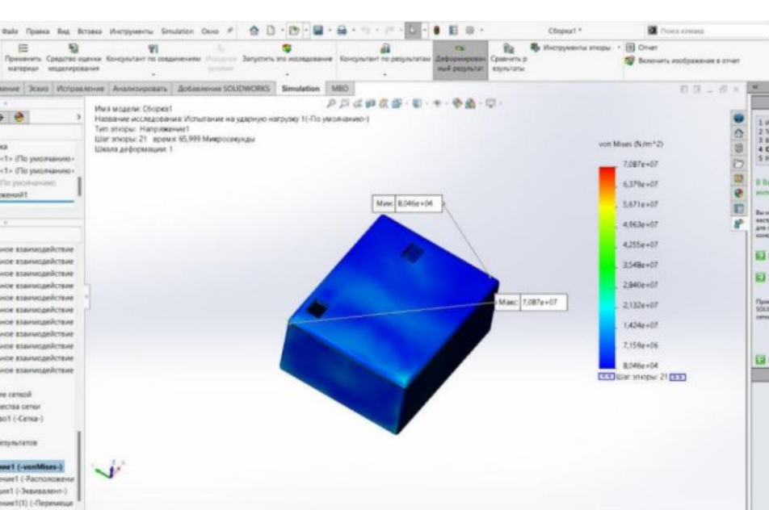

Надёжность — выбор элементной базы (Кн)
Для каждого элемента рассчитан коэффициент нагрузки (Кн) — отношение фактической нагрузки к допустимой по даташиту. Все значения должны быть меньше 1,0.
| Позиция | Хар-ка | Расчётное значение | По даташиту | Кн | Оценка |
|---|
| R1 | P, Вт | 0,02 Вт | 0,25 Вт | 0,18 | ✓ |
| R2 | P, Вт | 0,2 Вт | 0,25 Вт | 0,80 | ✓ |
| C1 | U, В | 6,84 В | 25 В | 0,273 | ✓ |
| Q1 (BD139) | P, Вт | 21,4 мВт | 80 Вт | <0,001 | ✓ |
| Q2 (BD139) | P, Вт | 106,6 мВт | 80 Вт | 0,0013 | ✓ |
| Q3 (BD139) | P, Вт | 2,41 Вт | 80 Вт | 0,030 | ✓ |
| Q4 (BD139) | P, Вт | 43,71 Вт | 80 Вт | 0,546 | ✓ |
| Q5 (2N3055) | P, Вт | 32,08 мВт | 115 Вт | <0,001 | ✓ |
| Q6 (BD139) | P, Вт | 5,46 нВт | 80 Вт | <0,001 | ✓ |
| D1–D4 (1N4001) | U, В | до 20,94 В | 50 В | до 0,42 | ✓ |
| D5–D6 (10A01) | U, В | 12 В | 50 В | 0,24 | ✓ |
| T1 | U, В | Uin 12 В / Uout ±106 В | 500 В | 0,23 | ✓ |
Все элементы работают в допустимых режимах нагрузки. Коэффициент нагрузки не превышает 0,8 ни для одного компонента.
Общие положения исследования надёжности
Исследование надёжности базируется на расчёте интенсивности отказов основных электронных компонентов и оценке вероятности безотказной работы прототипа в течение заданного времени. Для каждого элемента учитываются тип, режим работы и справочные значения интенсивности отказов; затем формируется суммарная интенсивность отказов всего устройства.
При оценке надёжности учитывается доля стандартных компонентов (для которых доступны проверенные статистические данные) и условия эксплуатации из ТЗ (температура, влажность, режим нагрузки). Средняя наработка на отказ — не менее 3 лет.
Механическое моделирование
Механическое моделирование выполнено в среде SolidWorks и направлено на оценку прочности корпуса при механических воздействиях (падение с заданной высоты). Учтена геометрия корпуса, материал (АБС‑пластик) и характер нагрузок.
Результаты прочностного анализа
- При падении устройства с высоты 1,5 м возникающие напряжения в корпусе достигают порядка 70 МПа.
- Это превышает предельно допустимое напряжение для АБС‑пластика (~35 МПа).
- Вывод: в текущей конфигурации корпус не выдерживает падения с высоты 1,5 м без разрушения. Это учитывается при формировании ограничений по эксплуатации и при дальнейшей оптимизации конструкции.

Рис. — Механическое моделирование короба платы (SolidWorks): распределение напряжений по Мизесу
Схемотехническое моделирование
Схемотехническое моделирование выполнено в среде Proteus. Цель — проверка работоспособности схемы и подтверждение выходных параметров (U ≈ 220 В, f = 50 Гц).
Состав схемы
- Трансформатор TR1 (Bel Fuse 0553-0013-BC)
- Диоды — 6 шт. (мостовой выпрямитель + диоды обратной связи)
- Транзисторы NPN — 6 шт. (BD139 × 5, 2N3055 × 1)
- Резисторы — 2 шт. (MFR25SJRE52)
- Конденсатор — 1 шт. (К50-35, 2,2 мкФ)
- Источник постоянного напряжения 12 В
- Осциллограф и вольтметры (2 шт.) — контрольно-измерительные приборы
Итоговое напряжение на выходе схемы: ~220 В переменного тока.

Рис. 1 — Электрическая схема инвертора напряжения (Proteus)
Топологическое моделирование
Топологическое моделирование выполнено в среде DipTrace. Принципиальная электрическая схема преобразована в физическую геометрию печатной платы с учётом реального расположения компонентов, трасс проводников, зазоров и технологических норм.
Выполненные работы
- Расстановка электронных компонентов согласно перечню
- Интерактивная и автоматическая трассировка соединений
- Оптимизация разводки печатной платы
- Размещение разъёмов, силовых элементов, монтажных отверстий
Габариты платы: A = 60 мм, B = 47 мм, h = 1,58 мм

Рис. 1–2 — Топология и электрическая схема инвертора напряжения (DipTrace)

Рис. 3 — 3D-вид печатной платы из DipTrace
3D моделирование
3D-моделирование корпуса устройства выполнено на основе габаритов печатной платы. Толщина стенок корпуса: 1,5–2 мм. Материал: АБС пластик.
Конструктивные особенности
- Конструкция включает верхнюю и нижнюю крышки с отверстиями под крепёж
- Плата устанавливается в нижнюю часть корпуса, верхняя крышка фиксируется сверху
- Для сборки используются 4 крепёжных винта M3
| Файл | Описание | Формат |
|---|
| Корпус.stl | Нижняя часть корпуса | STL |
| Крышка.stl | Верхняя крышка корпуса | STL |
| Плата.step | Печатная плата с компонентами | STEP |

Рис. 1 — 3D-модель корпуса для платы инвертора